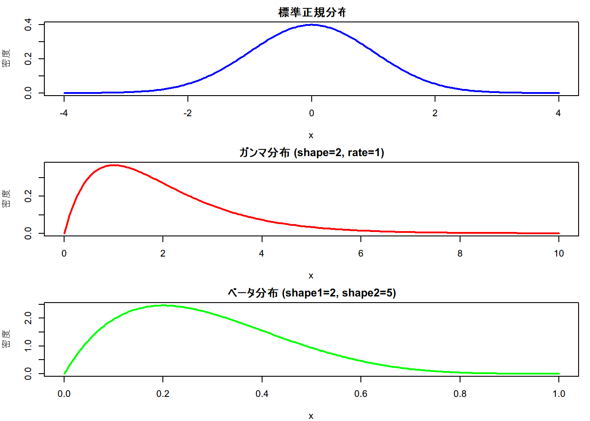

# x軸の値を生成
x <- seq(-4, 4, length=200)
# 正規分布（平均0、標準偏差1）の確率密度関数
y_norm <- dnorm(x, mean=0, sd=1)
# ガンマ分布（shape=2, rate=1）の確率密度関数（xは正の範囲で）
x_gamma <- seq(0, 10, length=200)
y_gamma <- dgamma(x_gamma, shape=2, rate=1)
# ベータ分布（shape1=2, shape2=5）
x_beta <- seq(0, 1, length=200)
y_beta <- dbeta(x_beta, shape1=2, shape2=5)
# プロット設定
par(mfrow=c(3,1), mar=c(4,4,2,1)) # 3行1列に並べる
# 正規分布のプロット
plot(x, y_norm, type="l", col="blue", lwd=2, main="標準正規分布", ylab="密度", xlab="x")
# ガンマ分布のプロット
plot(x_gamma, y_gamma, type="l", col="red", lwd=2, main="ガンマ分布 (shape=2, rate=1)", ylab="密度", xlab="x")
# ベータ分布のプロット
plot(x_beta, y_beta, type="l", col="green", lwd=2, main="ベータ分布 (shape1=2, shape2=5)", ylab="密度", xlab="x")